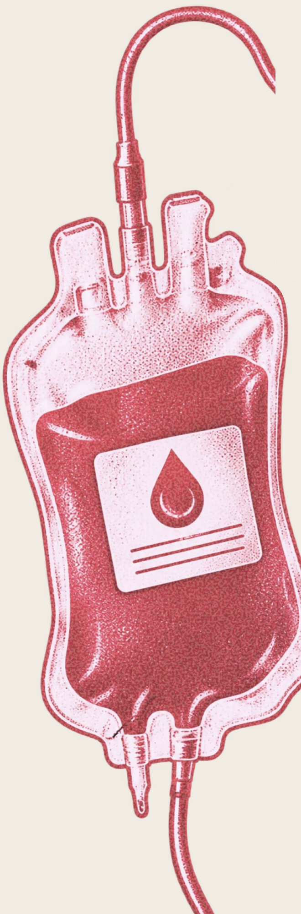
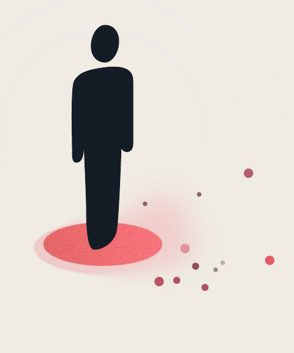
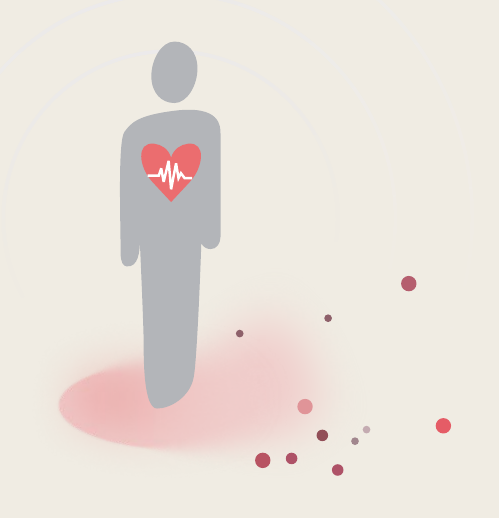
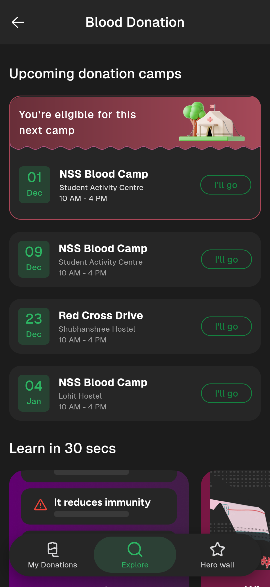
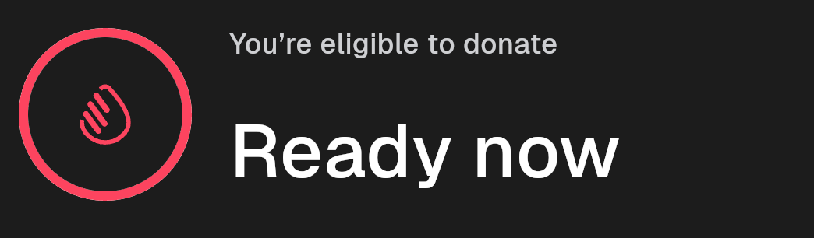
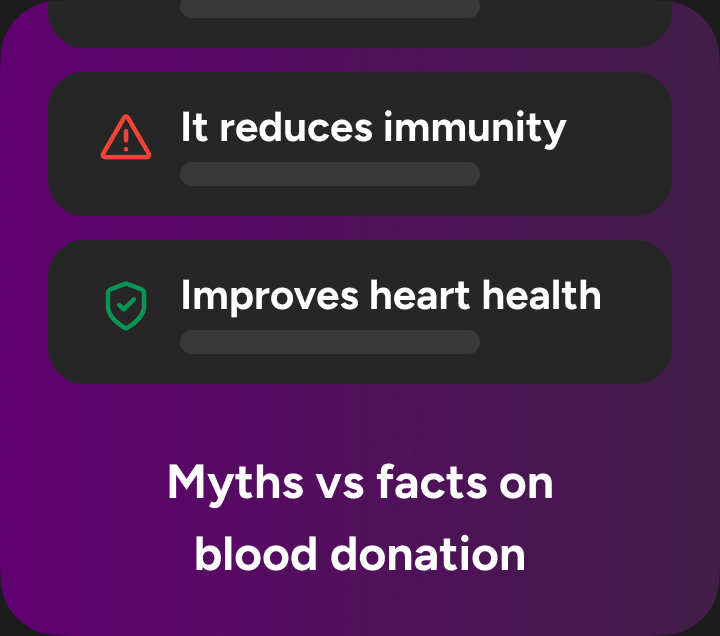
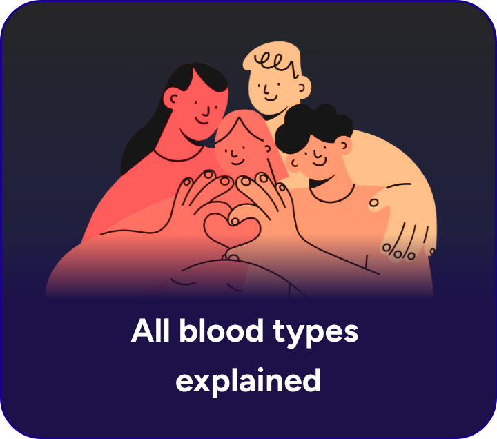

Breaking the Bystander Effect: Designing a Personalised Donor-Matching Experience for Urgent Blood Requests on Campus
264205004
At IIT Guwahati, urgent blood requests reach the whole campus as one broadcast email. Because everyone receives the same message, each person assumes someone else will step up, and the request goes unanswered. This project replaces that broadcast with a personalised experience inside OneStop, the campus super-app. Each request is matched to a small group of eligible donors and sent to each of them as a personal, time-bound ask. A guided flow then takes them from saying yes to donating and being recognised for it.
The NSS Office,
IIT Guwahati
Goal: engage more and more students in urgent blood donation, and keep them coming back.

APATHY
A passive assumption that someone else will respond

Sent to faculty, staff and students alike, several times a week. Students were asked how they respond to it →
"Why didn't you respond to the NSS blood requirement mail?"
open to donating in future
Key insights
Behavioural research shows that non-engagement is a response to a mix of cognitive biases, perceived effort and social dynamics, not a lack of empathy.
BYSTANDER EFFECT
In large groups, each person assumes someone else will respond, reducing personal responsibility.

HABITUATION (BANNER BLINDNESS)
Repeated, similar mails train the brain to ignore the entire category.
FRICTION OVERESTIMATION
People overestimate the effort of responding, verifying and travelling.
PSYCHOLOGICAL REACTANCE
Repeated asking creates resistance and quiet resentment towards the asker. Also recorded in the primary research.
never donated because they were never personally asked

didn't donate due to health-related concerns

Don't ask everyone. Ask the right few, by name.
A mass, anonymous mail is the structural opposite of a personal ask. So each request goes to 2 matched, eligible donors per unit, and every step after "yes" is made effortless.

For the NSS office: raise a request once, and it is matched to eligible donors by blood group, sent as a personal ask, and tracked live, from "asked" to "said yes" to "donated". Students carry it from a one-swipe yes to recognition on the Hero wall.








